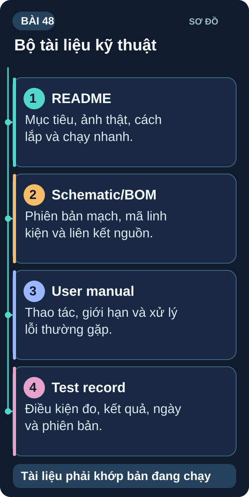
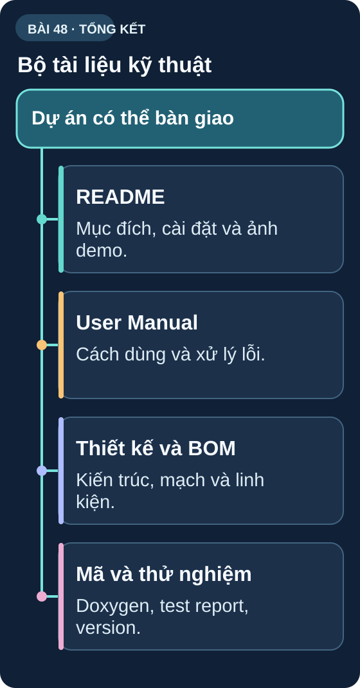

Viết Tài Liệu Kỹ Thuật
Sản phẩm không có tài liệu = sản phẩm chưa hoàn chỉnh. Kỹ năng viết doc là dấu hiệu của kỹ sư chuyên nghiệp.
📝 Viết tài liệu: 90 phút🔗 GitHub upload: 30 phút
🎯 Mục tiêu bài học
- Hiểu các loại tài liệu kỹ thuật — khi nào viết loại nào
- Viết README.md theo chuẩn GitHub — project page chuyên nghiệp
- Viết User Manual — hướng dẫn sử dụng cho người dùng cuối
- Comment code đúng cách — Doxygen format
- Tạo schematic documentation với chú thích đầy đủ
- Upload project lên GitHub — version control + public showcase
- Changelog — ghi lại thay đổi theo version

Sơ đồ tổng quan Bài 48
Bộ tài liệu kỹ thuật. Tài liệu phải khớp bản đang chạy.
Nguồn: tự vẽ cho giáo trình; nội dung đối chiếu với bài học.
1. Các loại tài liệu kỹ thuật
| Loại tài liệu | Đối tượng | Nội dung chính |
|---|---|---|
| README.md | Developer / GitHub visitor | Mô tả dự án, tính năng, cách cài đặt, cách dùng, ảnh demo |
| User Manual | Người dùng cuối | Hướng dẫn sử dụng, troubleshooting, cảnh báo an toàn |
| Technical Design Doc | Kỹ sư khác / future self | Kiến trúc, quyết định thiết kế, API, protocol |
| BOM & Schematic Doc | Nhà sản xuất, kỹ sư phần cứng | Danh sách linh kiện, giá, nguồn cung, datasheet links |
| Test Report | QA, khách hàng | Kết quả test, P/F, lỗi đã biết, version được test |
2. README.md — Template chuẩn GitHub
# 🌡️ IoT Weather Station — ESP32 + BME280 [](LICENSE) [](https://platformio.org) Trạm thời tiết IoT với ESP32, đo nhiệt/ẩm/áp và upload lên Adafruit IO.  ## ✨ Tính năng - 🌡️ Đo nhiệt độ ±0,5°C (BME280) - 💧 Đo độ ẩm ±2% RH - ☁️ Upload Adafruit IO mỗi 60 giây - 📱 Cảnh báo Telegram khi nhiệt độ bất thường - 🔋 Pin LiPo 2000mAh — >24h hoạt động - 📊 Log dữ liệu SD card ## 🛠️ Phần cứng cần thiết | Linh kiện | Số lượng | Link | |-----------|----------|------| | ESP32 DevKit v1 | 1 | Shopee | | BME280 I2C | 1 | Shopee | | SSD1306 OLED 128×64 | 1 | Shopee | ## 📦 Cài đặt 1. Clone repo: `git clone https://github.com/user/weather-station` 2. Mở PlatformIO IDE, open folder 3. Sửa `src/config.h`: nhập WiFi SSID, password, Adafruit IO key 4. Build và Upload: Ctrl+Alt+U ## 📖 Hướng dẫn sử dụng [Xem User Manual](docs/USER_MANUAL.md) ## 🔧 Troubleshooting - **OLED không hiển thị**: Kiểm tra địa chỉ I2C bằng I2C Scanner - **WiFi không kết nối**: Đảm bảo router dùng WPA2, không WPA3-only ## 📜 License MIT License — Tự do sử dụng, học tập và chia sẻ.
3. Comment code — Doxygen format
/**
* @brief Đọc nhiệt độ từ BME280 với calibration offset.
*
* @param offset Offset hiệu chỉnh (°C) — mặc định 0.0
* @return float Nhiệt độ đã hiệu chỉnh (°C), hoặc NAN nếu lỗi
*
* @note Hàm này gọi bme.readTemperature() bên trong thư viện Adafruit BME280.
* Thời gian đọc: ~2ms. Không gọi quá 1 lần/100ms.
*
* @example
* float temp = getCalibratedTemp(-1.5); // Offset -1.5°C
* if (!isnan(temp)) Serial.println(temp);
*/
float getCalibratedTemp(float offset = 0.0) {
float raw = bme.readTemperature();
if (isnan(raw)) return NAN;
return raw + offset;
}
Bài tập
📝 Bài tập Bài 48
1
Viết README.md hoàn chỉnh cho đồ án: tên, mô tả, tính năng, BOM, cài đặt, hướng dẫn dùng, troubleshooting.
2
Comment tất cả function public trong firmware theo Doxygen format: @brief, @param, @return, @note.
3
Tạo GitHub repository, upload toàn bộ code + README + schematic + BOM. Share link.
Cấu trúc repository khuyến nghị: /src (code firmware), /hardware (KiCad files, Gerber zip), /docs (README, User Manual, ảnh demo), /bom.csv (Bill of Materials), LICENSE (MIT), .gitignore (loại bỏ .pio/, build/). Để thêm ảnh demo vào README: chụp ảnh → upload vào /docs/ → dùng  trong README.md.
✅ Checklist Bài 48
Sơ đồ tổng hợp Bài 48

Bộ tài liệu kỹ thuật
Dự án có thể bàn giao. Các nhánh bên dưới dẫn tới nội dung đã học trong bài.
Nguồn: tự vẽ cho giáo trình; đối chiếu theo các mục của bài.
Đọc nội dung sơ đồ bằng chữ
- README: Mục đích, cài đặt và ảnh demo. (mục README.md).
- User Manual: Cách dùng và xử lý lỗi. (mục Các loại tài liệu kỹ thuật).
- Thiết kế và BOM: Kiến trúc, mạch và linh kiện. (mục Các loại tài liệu kỹ thuật).
- Mã và thử nghiệm: Doxygen, test report, version. (mục Comment code).